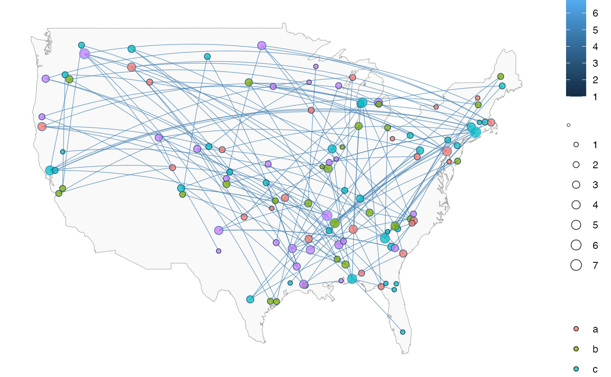
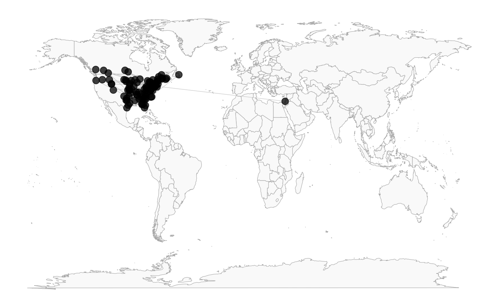
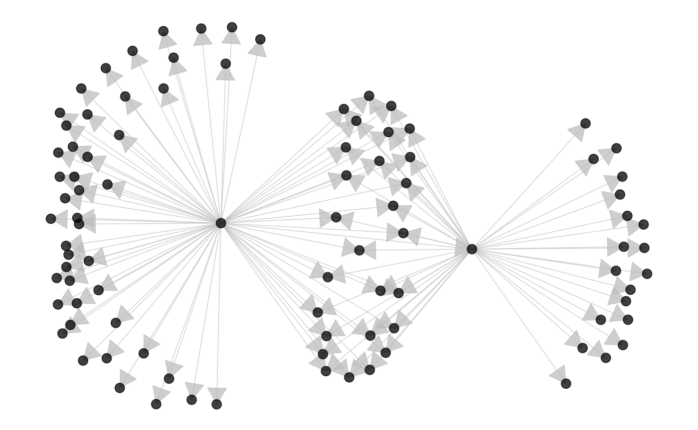
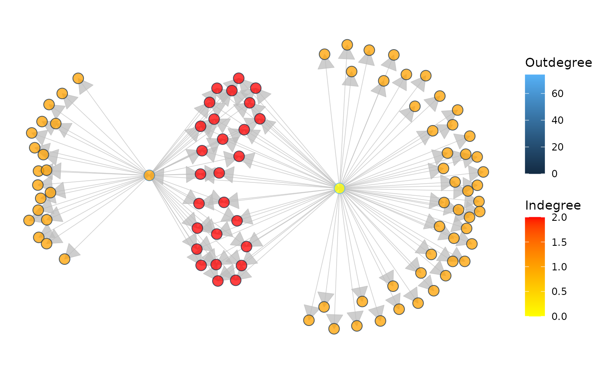
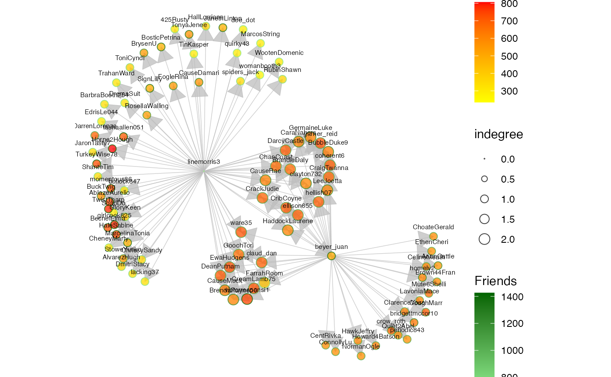

vignettes/ggnetworkmap.Rmd
ggnetworkmap.Rmdlibrary(GGally) #> Loading required package: ggplot2 #> Registered S3 method overwritten by 'GGally': #> method from #> +.gg ggplot2
GGally::ggnetworkmap()
ggnetworkmap() is a function for plotting elegant maps using ggplot2. It builds on ggnet() by allowing to draw a network over a map, and is particularly intended for use with ggmap.
This example is based on a tutorial by Nathan Yau at Flowing Data.
suppressMessages(library(ggplot2)) suppressMessages(library(maps)) suppressMessages(library(network)) suppressMessages(library(sna)) airports <- read.csv("http://datasets.flowingdata.com/tuts/maparcs/airports.csv", header = TRUE) rownames(airports) <- airports$iata # select some random flights set.seed(1234) flights <- data.frame( origin = sample(airports[200:400, ]$iata, 200, replace = TRUE), destination = sample(airports[200:400, ]$iata, 200, replace = TRUE) ) # convert to network flights <- network(flights, directed = TRUE) # add geographic coordinates flights %v% "lat" <- airports[ network.vertex.names(flights), "lat" ] flights %v% "lon" <- airports[ network.vertex.names(flights), "long" ] # drop isolated airports delete.vertices(flights, which(degree(flights) < 2)) # compute degree centrality flights %v% "degree" <- degree(flights, gmode = "digraph") # add random groups flights %v% "mygroup" <- sample(letters[1:4], network.size(flights), replace = TRUE) # create a map of the USA usa <- ggplot(map_data("usa"), aes(x = long, y = lat)) + geom_polygon(aes(group = group), color = "grey65", fill = "#f9f9f9", size = 0.2) # trim flights delete.vertices(flights, which(flights %v% "lon" < min(usa$data$long))) delete.vertices(flights, which(flights %v% "lon" > max(usa$data$long))) delete.vertices(flights, which(flights %v% "lat" < min(usa$data$lat))) delete.vertices(flights, which(flights %v% "lat" > max(usa$data$lat))) # overlay network data to map ggnetworkmap(usa, flights, size = 4, great.circles = TRUE, node.group = mygroup, segment.color = "steelblue", ring.group = degree, weight = degree)

This next example uses data from a Twitter spam community identified while exploring and trying to clear-up a group of tweets. After coloring the nodes based on their centrality, the odd structure stood out clearly.
data(twitter_spambots)
# create a world map world <- fortify(map("world", plot = FALSE, fill = TRUE)) world <- ggplot(world, aes(x = long, y = lat)) + geom_polygon(aes(group = group), color = "grey65", fill = "#f9f9f9", size = 0.2) # view global structure ggnetworkmap(world, twitter_spambots)

Is the network really concentrated in the U.S.? Probably not. One of the odd things about the network, is a much higher proportion of the users gave locations that could be geocoded, than Twitter users generally.
Let’s see the network topology
ggnetworkmap(net = twitter_spambots, arrow.size = 0.5)

Coloring nodes according to degree centrality can highlight network structures.
# compute indegree and outdegree centrality twitter_spambots %v% "indegree" <- degree(twitter_spambots, cmode = "indegree") twitter_spambots %v% "outdegree" <- degree(twitter_spambots, cmode = "outdegree") ggnetworkmap(net = twitter_spambots, arrow.size = 0.5, node.group = indegree, ring.group = outdegree, size = 4) + scale_fill_continuous("Indegree", high = "red", low = "yellow") + labs(color = "Outdegree")

Some Twitter attributes have been included as vertex attributes.
# show some vertex attributes associated with each account ggnetworkmap(net = twitter_spambots, arrow.size = 0.5, node.group = followers, ring.group = friends, size = 4, weight = indegree, label.nodes = TRUE, vjust = -1.5) + scale_fill_continuous("Followers", high = "red", low = "yellow") + labs(color = "Friends") + scale_color_continuous(low = "lightgreen", high = "darkgreen")
